Ordena, elige y pronostica cómo crees que irá la Champions. Cuantos más aciertos, más puntos. Gana quien más sume al final del torneo. Aquí tienes todo explicado paso a paso.
Entra en la web y pulsa Crear cuenta. Solo necesitas un nombre, un email y una contraseña.
Si ya tienes cuenta, usa Entrar con tu email y contraseña. Tus pronósticos quedan guardados y solo tú puedes editarlos.
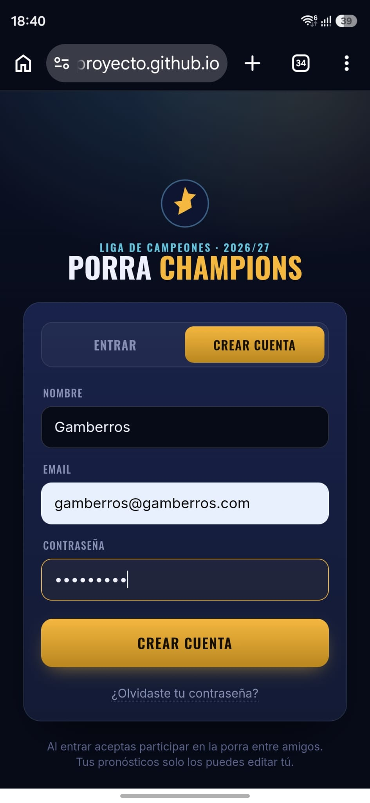
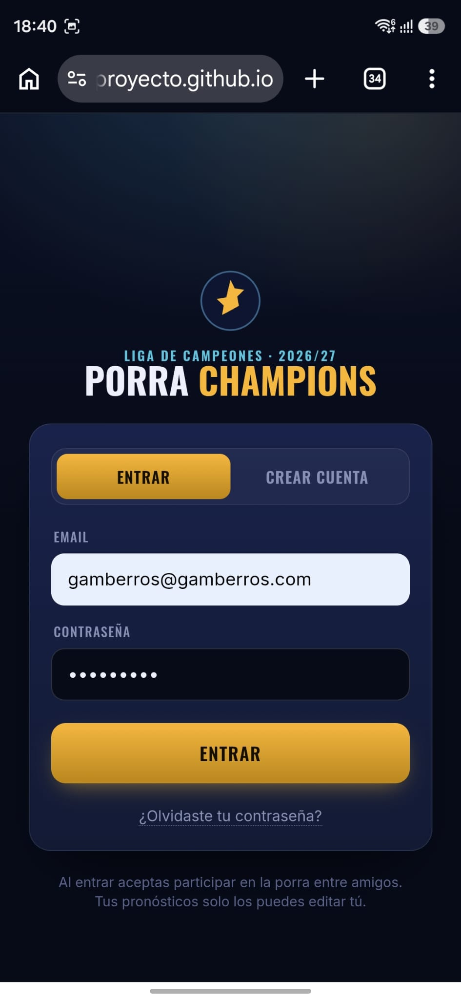
La porra tiene 4 fases, que se corresponden con el torneo real:
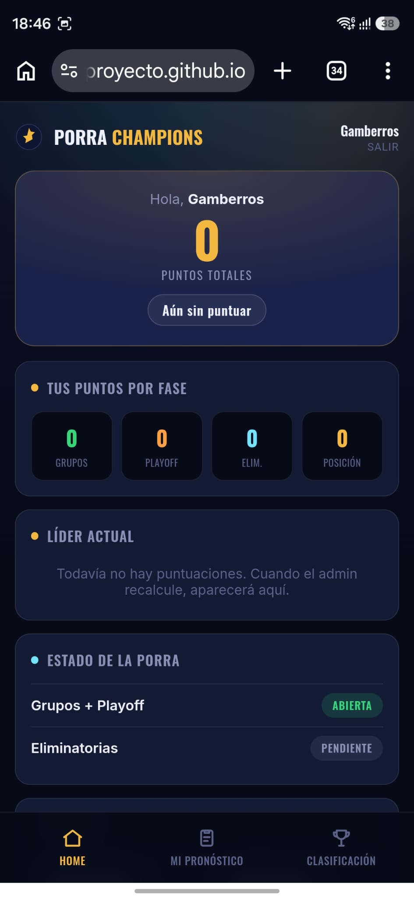
Arrastra los equipos para ordenarlos del 1º al 36º. Mantén pulsado uno y llévalo a su sitio.
El color de cada ficha te indica su zona: verde = pasa directo a octavos, naranja = juega el playoff, rojo = queda eliminado. Los separadores marcan los cortes.
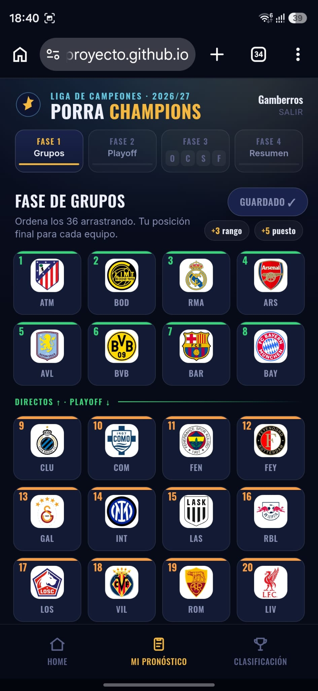
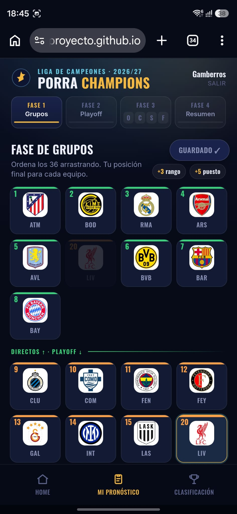
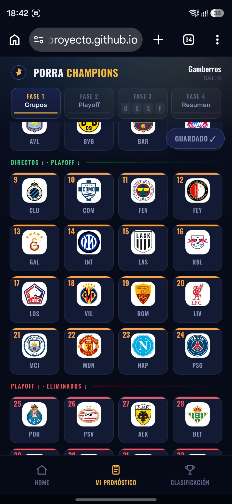
Da un toque corto a cualquier equipo y se iluminan sus 8 rivales de la fase liga.
Así te haces una idea de lo difícil que tiene el calendario y decides mejor en qué puesto colocarlo. Toca de nuevo para quitar el resaltado.
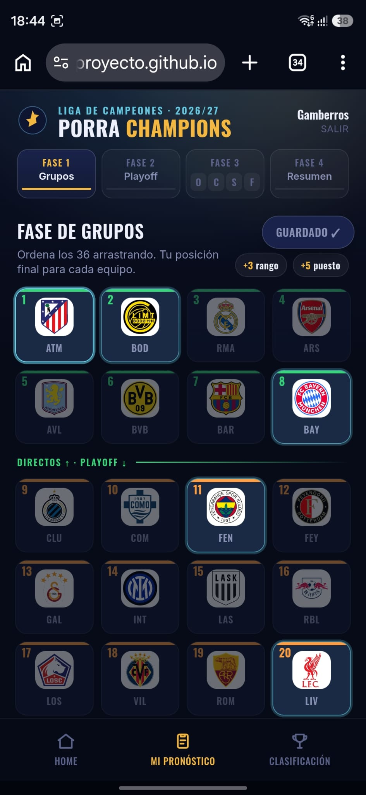
De los equipos que colocaste en puestos 9º a 24º, elige los 8 que crees que pasarán el playoff a octavos.
Toca cada equipo para marcarlo (aparece un check dorado). El contador te muestra cuántos llevas: X / 8. Al llegar a 8, los demás se atenúan.
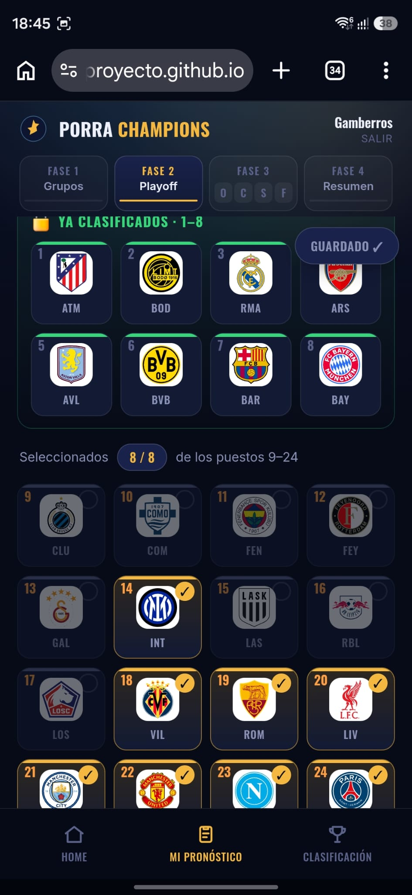
Cuando termines, pulsa Guardar cambios (arriba a la derecha). Verás Guardado ✓ cuando esté todo bien.
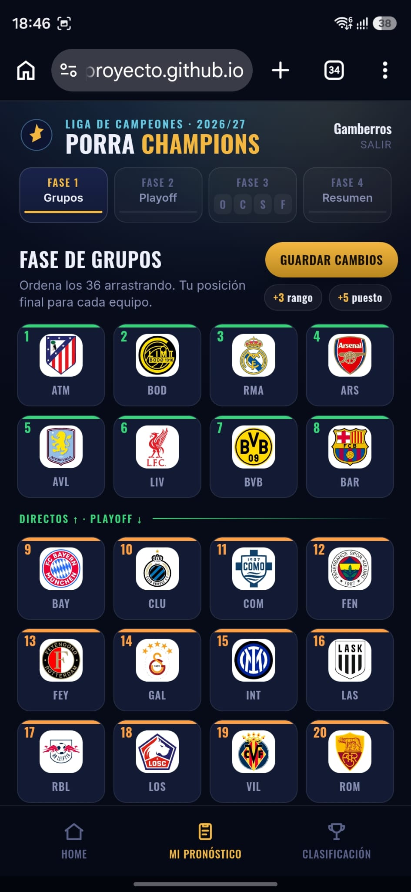
Cuando se abre esta fase, el organizador carga los cruces reales de octavos (los del sorteo). A partir de ahí, tú pronosticas.
Desliza el cuadro a los lados para avanzar de ronda (Octavos → Cuartos → Semifinales → Final) y ve pronosticando cada enfrentamiento según se va rellenando. Tus ganadores suben solos a la ronda siguiente.
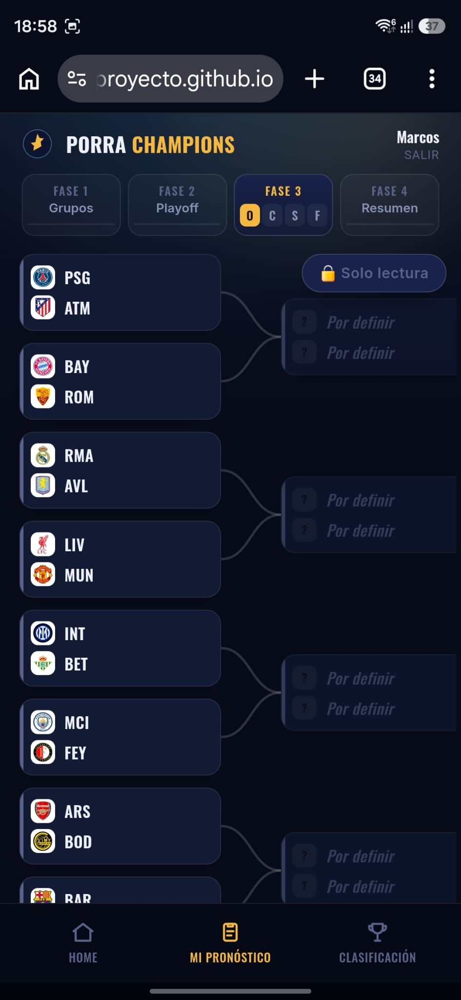
Toca un partido para abrir el marcador: ajusta los goles con + / –. Si queda empate, toca el escudo del equipo que pasa (se marca con un aro dorado). Usa Ant. / Sig. para recorrer todos los partidos.
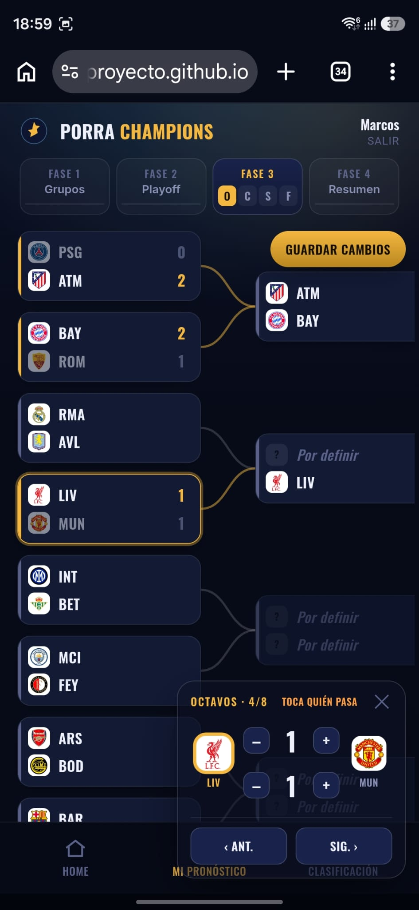
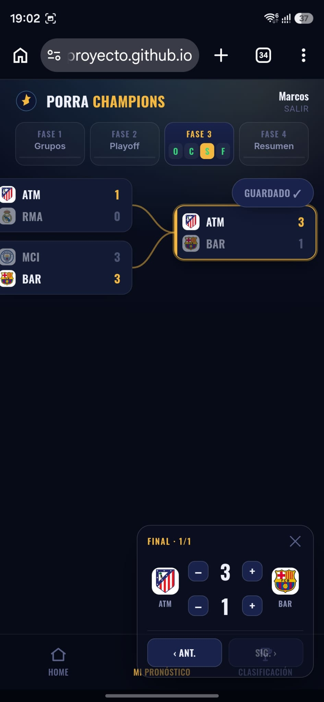
Un repaso completo de tu pronóstico: tu orden de grupos, tus 8 del playoff y tu cuadro de eliminatorias.
Úsalo para revisar que todo está como quieres antes de dejarlo cerrado.
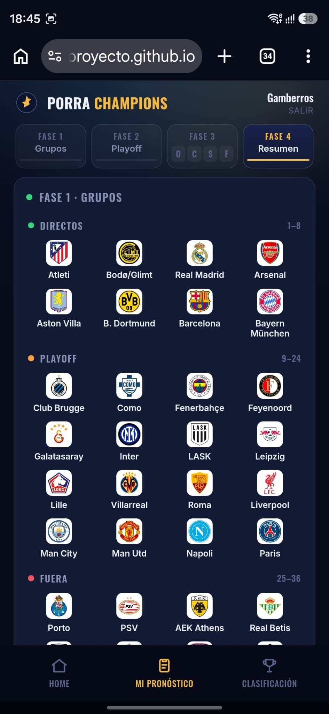
En Clasificación ves quién va ganando y el desglose de puntos de cada jugador, fase por fase.
Las pestañas Grupos · Playoff · Eliminatorias · Posición final te muestran el detalle de aciertos de todos. Tu columna aparece resaltada.
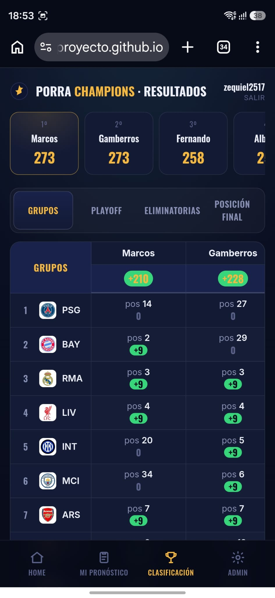
Puedes instalar la porra como una app en tu móvil: se abre a pantalla completa y con su propio icono.
En Android (Chrome): abre el menú ⋮ → Instalar y crear acceso directo → Instalar. Aparecerá su icono en tu pantalla de inicio.
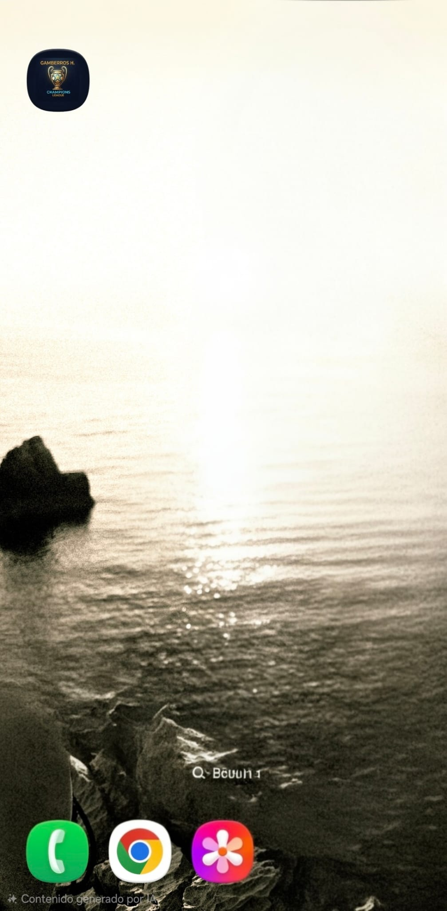
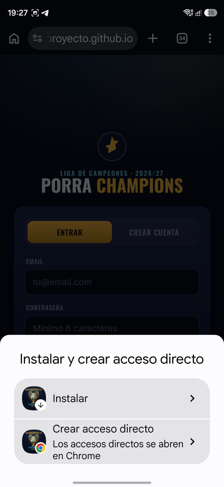
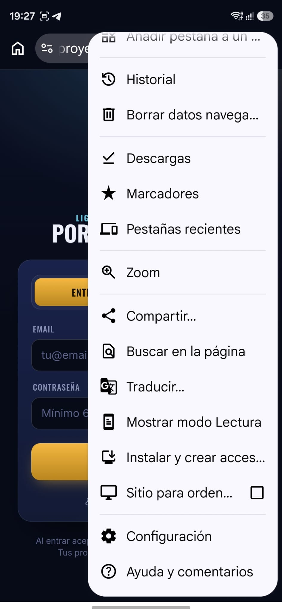
¿Todo claro? ¡Pues a por la porra!
Ir a mi pronóstico →